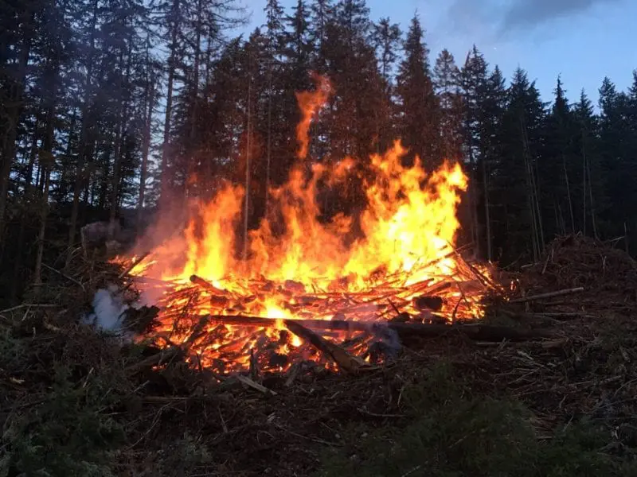
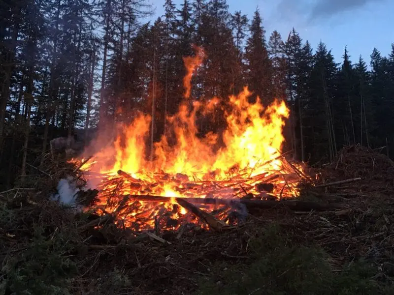
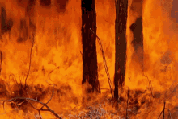
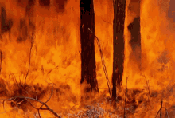
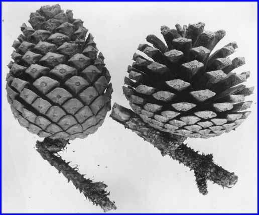
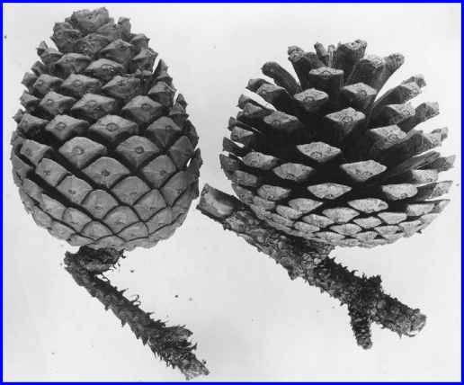

Ecology
Fire Ecology
Fire ecology is a branch of ecology that focuses on the origins of wildland fire and it's relationship to the environment that surrounds it, both living and non-living. A wildland fire is defined as any fire that is burning in a natural environment. Fire ecologists recognize that fire is a natural process, and that it often operates as an integral part of the ecosystem in which it occurs.
How does Nature overcome?
Approximately 90% of fires in the last decade have been human-caused, either through negligence, accident or intentional arson. Some of the fires caused by accidents and negligent acts are through unattended campfires, sparks, irresponsibly discarded cigarettes and burning debris. The remaining 10% of fires are caused by lightning strikes, which are especially prevalent in the Western United States and Alaska. In the 1930's, researchers in the southern United States argued against the negative perspective that has surrounded fire, with the belief that all fire is bad. It was realized that the devastating picture painted by huge-scale fires produced fear in the minds of the public (and in politicians and scientists alike), and that this generated detrimental results in response to any wildland fires.
 

But still fire can also be seen as a boon to the wildlife. Below are the reasons why...
Seed Germination: Some plants have seeds with hard coatings that prevent germination. Fire can crack these coatings, aiding germination.
Habitat Renewal: Fire promotes the growth of new vegetation, providing fresh habitats and food sources for various animal species.
Biodiversity Promotion: Controlled fires clear out undergrowth, allowing sunlight to reach the forest floor and encouraging diverse plant species to thrive.
Nesting Opportunities: Fire can clear out underbrush, creating open spaces and safe areas for ground-nesting birds and mammals.
Fire can cause soil damage, especially through combustion in the litter layer and organic material in the soil. This organic material helps to protect the soil from erosion. When organic material is removed by an essentially intense fire, erosion can occur. Heat from intense fires can also cause soil particles to become hydrophobic. Rainwater then tends to run off the soil rather than to infiltrate through the soul. This can also contribute to erosion. In actuality, the negative effects of fires on soils are often exaggerated, and many fairly intense fires in western United States forests cause little soil damage. There is also the potential for alien plants to become established after fire in previously uninfested areas.
Some more information
Wildfire impacts and fire-exclusion policies vary widely (Smith and Fischer 1997). Much attention focuses on dense small tree growth and its influence on fire severity, particularly in drier ecosystems. However, this doesn't universally hold true for wetter, colder forests in the northern Rockies and Pacific Northwest, nor non-forested regions. Historical fire frequency differs based on vegetation type. Ecological effects of suppression policies since 1911 also vary by vegetation.
 

Dry coniferous forests, previously untouched by fire due to management practices like timber production and grazing, now exhibit altered tree density and composition, increasing the fuel concentration. This elevates the risk of intense wildfires, attributed to reduced spacing and higher fuel levels. Images to consider:

Subalpine forests, distinct from dry forests, span vast elevated regions and consist mainly of subalpine fir, lodgepole pine, Engelmann spruce, and whitebark pine. These higher-elevation forests experience increased moisture and cold. While certain conifers within these forests are susceptible to moderate-intensity fires, lodgepole pine, a dominant species, thrives after wildfires due to its unique reproductive mechanism. The cones of lodgepole pine are serotinous, sealed with resin that melts at fire temperatures (113-140 °F), releasing seeds and facilitating post-fire regeneration.

 

Wildlife's strategies against forest fires include habitat selection, physiological traits, and camouflage. Animals prefer landscapes with varying vegetation types, seek refuge in less fire-prone areas, and use flight or burrowing to escape. Camouflage aids them in evading predators during fires, highlighting the interaction between ecology, evolution, and nature's forces.
After a forest fire, a dynamic recovery unfolds in the animal kingdom, including resilient eggs, seeds, and dormant life stages. Insects, amphibians, and certain plants endure fires, awaiting optimal conditions for growth. These hardy organisms lay the groundwork for ecosystem restoration, bolstering biodiversity. Some animals engage in post-fire foraging, opportunistic scavengers exploiting charred remains, and predators preying on weakened or displaced creatures. Early successional stages post-fire offer a haven for herbivores and their carnivorous counterparts. Adaptations emerge as animals adjust routines to the transformed landscape, with increased nocturnal activity and shifted movement patterns. Cooperative behaviors aid survival, facilitating fire threat information sharing, evacuation, and communal protection. This intricate web of responses underscores the profound wildlife-fire relationship shaping ecosystems in unique ways.
Deaths of animals
723KDeaths of Humans
65KTree's destroyed
88MLives saved
17MBeyond the topic
Combustion is a chemical process in which a substance reacts rapidly with oxygen and gives off heat. The original substance is called the fuel, and the source of oxygen is called the oxidizer. The fuel can be a solid, liquid, or gas, although for airplane propulsion the fuel is usually a liquid. Usually it happens with the a hydrocarbon or carbon fuel. Such as methane gas.
Fusion
Nuclear fusion is the process where two small atoms are heated up and fused together. The process involves a few basic steps: atoms are heated, the atoms collide with substantial force overcoming the coulomb force between them, the atoms fuse together, and a large amount of energy is released. This process however requires a large amount of temperature already to be present for this to work
Fission
Fission occurs when a neutron slams into a larger atom, forcing it to excite and split into two smaller atoms—also known as fission products. Additional neutrons are also released that can initiate a chain reaction. When each atom splits, a tremendous amount of energy is released. For fission a radioactive isotope is necessary. And the isotope is to be compressed to the critical mass of the object i.e the mass where nuclear fission starts